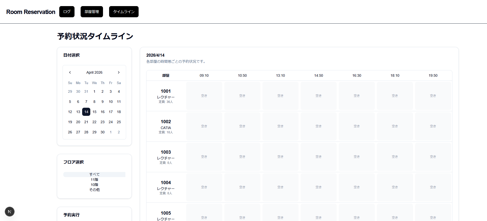
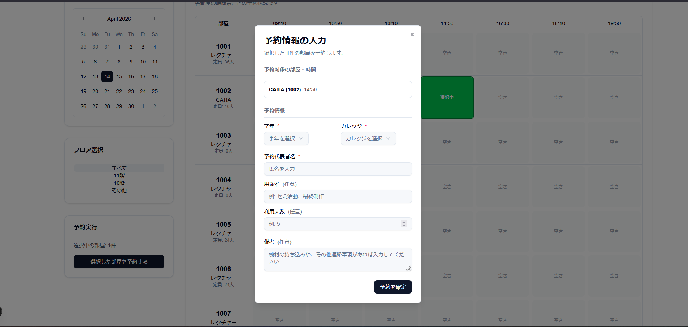
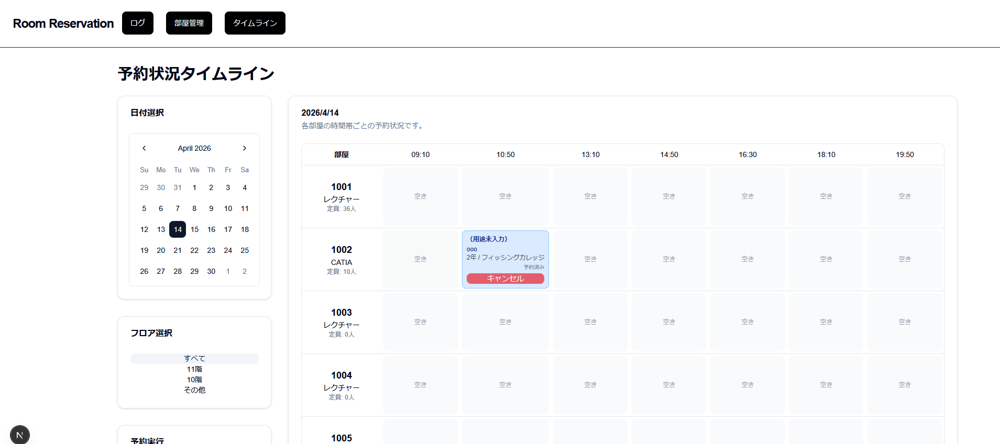
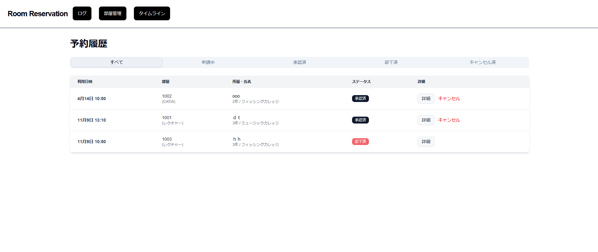
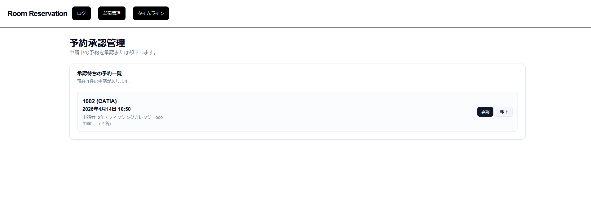

1. プロジェクト概要
基本情報
- プロジェクト名:
npg - バージョン:
0.1.0（package.json のversion） - アプリケーション名: 「予約アプリ」
- 言語設定: 日本語
- リポジトリ: https://github.com/zxswv/npg
- 開発手法: アジャイル開発
開発手法に関する補足
個人申告に基づく整理
本ドキュメントでは、開発手法をユーザー申告に基づきアジャイル開発として整理する。
リポジトリ内の Prisma マイグレーションには以下の履歴が存在する。
20251003055302_20251003060729_init20251005061832_add_reservation_status20251109074958_add_cancelled_status
アプリケーションで確認できた機能
- タイムライン形式での教室予約状況表示（
src/app/timeline/page.tsx） - カレンダーによる日付選択（
react-day-pickerを使用） - フロア別フィルター機能（10F / 11F / other の分類。判定は部屋番号 prefix ベース）
- 予約の一括作成（
src/app/api/reservations/bulk/route.ts） -
予約ステータス管理（
PENDING,APPROVED,REJECTED,CANCELLED） - 管理画面での予約承認・却下（
src/app/adminPanel/page.tsx） - 予約履歴の閲覧・ステータス別表示（
src/app/History/page.tsx） - 予約キャンセル機能（画面によって PATCH または DELETE を使用）
- トースト通知（
sonner） - キャンセル確認ダイアログ（
AlertDialog）
2. 技術スタック
主要技術アイコン
以下は、技術スタックを視覚的に把握しやすくするための補助表示である。
フロントエンド
| 技術 | バージョン | 用途 |
|---|---|---|
| Next.js | ^15.5.4 | フレームワーク |
| React | ^19.0.0 | UIライブラリ |
| TypeScript | ^5 | 型付き開発 |
| Tailwind CSS | ^4.1.10 | スタイリング |
| @radix-ui/react-alert-dialog | ^1.1.15 | ダイアログUI |
| @radix-ui/react-avatar | ^1.1.10 | Avatar UI |
| @radix-ui/react-dialog | ^1.1.15 | ダイアログUI |
| @radix-ui/react-dropdown-menu | ^2.1.15 | メニューUI |
| @radix-ui/react-label | ^2.1.7 | Label UI |
| @radix-ui/react-scroll-area | ^1.2.10 | スクロール領域 |
| @radix-ui/react-select | ^2.2.5 | Select UI |
| @radix-ui/react-slot | ^1.2.3 | Slot UI |
| @radix-ui/react-tabs | ^1.1.13 | Tabs UI |
| @radix-ui/react-toggle | ^1.1.10 | Toggle UI |
| @radix-ui/react-toggle-group | ^1.1.11 | Toggle Group UI |
| lucide-react | ^0.522.0 | アイコン |
| react-day-picker | ^9.7.0 | カレンダーUI |
| date-fns | ^4.1.0 | 日付操作 |
| sonner | ^2.0.7 | トースト通知 |
| next-themes | ^0.4.6 | テーマ切替 |
| class-variance-authority | ^0.7.1 | バリアント管理 |
| clsx | ^2.1.1 | className結合 |
| tailwind-merge | ^3.3.1 | Tailwind クラス統合 |
バックエンド
| 技術 | バージョン | 用途 |
|---|---|---|
| Next.js Route Handler | ^15.5.4 | API実装 |
| Prisma ORM | ^6.16.2 | DBアクセス |
| @prisma/extension-accelerate | ^2.0.2 | Prisma Accelerate 拡張 |
| PostgreSQL | 14 | データベース |
開発ツール
| 技術 | バージョン | 用途 |
|---|---|---|
| ESLint | ^9 | 静的解析 |
| tsx | ^4.20.6 | TypeScript スクリプト実行 |
| ts-node | ^10.9.2 | TypeScript 実行 |
| tailwindcss-animate | ^1.0.7 | アニメーション補助 |
| tw-animate-css | ^1.3.4 | CSS アニメーション |
インフラ
| 技術 | 用途 |
|---|---|
| Docker / Docker Compose | コンテナ実行 |
| Dockerfile.next.js | 開発環境用 Dockerfile |
| Dockerfile.next.js.prod | 本番環境用 Dockerfile |
フォント
- Geist Sans（
--font-geist-sans） - Geist Mono（
--font-geist-mono）
3. プロジェクト構成
以下のツリーはリポジトリの実ファイル構成に基づく。
npg/
├── .gitignore
├── Dockerfile
├── Dockerfile.next.js
├── Dockerfile.next.js.prod
├── README.md
├── components.json
├── docker-compose.yml
├── docker-compose-prod.yml
├── eslint.config.mjs
├── next.config.ts
├── package.json
├── package-lock.json
├── postcss.config.mjs
├── tsconfig.json
├── memo/
│ ├── 本番環境構築.md
│ └── 環境構築.md
├── prisma/
│ ├── schema.prisma
│ ├── seed.ts
│ └── migrations/
│ ├── 20251003055302_/migration.sql
│ ├── 20251003060729_init/migration.sql
│ ├── 20251005061832_add_reservation_status/migration.sql
│ ├── 20251109074958_add_cancelled_status/migration.sql
│ └── migration_lock.toml
├── public/
│ ├── file.svg
│ ├── globe.svg
│ ├── next.svg
│ ├── vercel.svg
│ └── window.svg
└── src/
├── lib/
│ ├── prisma.ts
│ └── utils.ts
├── components/
│ └── ui/button.tsx
└── app/
├── globals.css
├── layout.tsx
├── page.tsx
├── timeline/
│ └── page.tsx
├── History/
│ └── page.tsx
├── adminPanel/
│ └── page.tsx
├── api/
│ ├── API.md
│ ├── reservations/
│ │ ├── route.ts
│ │ ├── [id]/route.ts
│ │ ├── bulk/route.ts
│ │ └── status/route.ts
│ ├── room/
│ │ └── route.ts
│ └── timeline/
│ └── route.ts
└── components/
├── Login/
│ └── Login_page.tsx
├── ReservationTimeline/
│ └── ReservationTimeline.tsx
├── layouts/header/
│ ├── Header.tsx
│ ├── akaibu/Header.tsx
│ ├── reservation-header.tsx
│ └── school-reservation-header.tsx
├── schedule/new/
│ └── page.tsx
├── timeline/
│ ├── DateSelector.tsx
│ ├── FloorFilter.tsx
│ ├── ReservationControl.tsx
│ └── ReservationDialog.tsx
└── ui/
├── alert-dialog.tsx
├── avatar.tsx
├── badge.tsx
├── button.tsx
├── calendar.tsx
├── card.tsx
├── dialog.tsx
├── dropdown-menu.tsx
├── input.tsx
├── label.tsx
├── scroll-area.tsx
├── select.tsx
├── sonner.tsx
├── table.tsx
├── tabs.tsx
├── textarea.tsx
├── toggle-group.tsx
└── toggle.tsx4. データベース設計
4.1 ER図
prisma/schema.prisma に基づく ER 図。
4.2 モデル定義
Schedule
| フィールド | 型 | 制約 | 説明 |
|---|---|---|---|
| id | Int | PK, autoincrement | スケジュールID |
| date | DateTime | unique | 日付 |
| slots | Slot[] | relation | 時間枠 |
| createdAt | DateTime | default(now()) | 作成日時 |
Slot
| フィールド | 型 | 制約 | 説明 |
|---|---|---|---|
| id | Int | PK, autoincrement | 時間枠ID |
| scheduleId | Int | FK | スケジュールID |
| startTime | DateTime | 開始時刻 | |
| endTime | DateTime | 終了時刻 | |
| reservations | Reservation[] | relation | 予約 |
Reservation
| フィールド | 型 | 制約 | 説明 |
|---|---|---|---|
| id | String | PK, uuid | 予約ID |
| slotId | Int | FK | 時間枠ID |
| roomId | Int | FK | 部屋ID |
| personName | String | 必須 | 予約者名 |
| grade | String | 必須 | 学年 |
| className | String | 必須 | クラス名 |
| purpose | String? | 任意 | 利用目的 |
| numberOfUsers | Int? | 任意 | 利用人数 |
| note | String? | 任意 | 備考 |
| status | ReservationStatus | default(PENDING) | ステータス |
| createdAt | DateTime | default(now()) | 作成日時 |
| updatedAt | DateTime | updatedAt | 更新日時 |
複合ユニーク制約: @@unique([slotId, roomId])
Room
| フィールド | 型 | 制約 | 説明 |
|---|---|---|---|
| id | Int | PK, autoincrement | 部屋ID |
| number | String | unique | 部屋番号 |
| name | String | 必須 | 部屋名 |
| capacity | Int | 必須 | 定員 |
| reservations | Reservation[] | relation | 予約 |
ReservationStatus
| 値 | 意味 |
|---|---|
| PENDING | 仮予約（申請中） |
| APPROVED | 承認済み |
| REJECTED | 却下済み |
| CANCELLED | キャンセル済み |
4.3 Prisma Client 構成
src/lib/prisma.tsで PrismaClient をシングルトンとして管理withAccelerate()により拡張- 非 production 環境では
globalThisに PrismaClient を保持 - ログ設定:
query,info,warn,error
5. API仕様
5.1 エンドポイント一覧
| メソッド | パス | ファイル | 機能 |
|---|---|---|---|
| GET | /api/room | src/app/api/room/route.ts |
部屋一覧取得 |
| POST | /api/room | src/app/api/room/route.ts |
部屋作成 |
| GET | /api/reservations | src/app/api/reservations/route.ts |
予約一覧取得 |
| POST | /api/reservations | src/app/api/reservations/route.ts |
単一予約または一括予約作成 |
| PATCH | /api/reservations/[id] | src/app/api/reservations/[id]/route.ts |
ステータス更新 |
| DELETE | /api/reservations/[id] | src/app/api/reservations/[id]/route.ts |
予約削除 |
| POST | /api/reservations/bulk | src/app/api/reservations/bulk/route.ts |
一括予約作成 |
| PATCH | /api/reservations/status | src/app/api/reservations/status/route.ts |
承認・却下 |
| GET | /api/timeline | src/app/api/timeline/route.ts |
タイムラインデータ取得 |
5.2 APIごとの確認事項
GET /api/reservations
- クエリパラメータ:
status -
ALL以外はPENDING,APPROVED,REJECTED,CANCELLEDを判定 createdAt降順で返却room.name,room.number,slot.startTimeを含む
POST /api/reservations
- 単一予約と一括予約の両方に対応
- 一括予約判定は
Array.isArray(body.slots) - 一括予約では Prisma の
$transactionを使用 REJECTED/CANCELLED以外の既存予約を重複判定対象にする
PATCH /api/reservations/[id]
- 受け付けるステータス:
APPROVED,REJECTED,CANCELLED - ソースコード内に権限チェック未実装の TODO コメントあり
DELETE /api/reservations/[id]
- 成功時は
204 No Content - Prisma
P2025を捕捉して404を返却 - ソースコード内に管理者権限チェック未実装の TODO コメントあり
POST /api/reservations/bulk
new Map()により重複スロットを排除APPROVEDの既存予約を対象に重複チェック- Prisma
P2002のエラーハンドリングあり
PATCH /api/reservations/status
APPROVED時は同一slotId・roomIdの承認済み予約を確認REJECTED時は対象予約を物理削除し204を返却
GET /api/timeline
- クエリパラメータ
date=YYYY-MM-DDが必須 - 該当日の schedule がなければその場で作成
-
1日 7 コマ（
09:10,10:50,13:10,14:50,16:30,18:10,19:50） - 各コマは 90 分
APPROVEDの予約のみ返却- 部屋は
number昇順で取得
5.3 APIフロー
src/app/api/API.md に記載の流れ。
[ブラウザ / fetch]
↓ HTTPリクエスト (GET /api/...)
[Next.js API Route Handler]
↓ PrismaでDBからデータ取得
↓ JSON形式に変換
↓ NextResponseで返却
[ブラウザ / fetch]
↓ JSONを受け取り画面に表示6. 画面構成
6.1 ページ一覧
| パス | ファイル | 内容 |
|---|---|---|
/ |
src/app/page.tsx |
TimelinePage を表示 |
/timeline |
src/app/timeline/page.tsx |
タイムライン画面 |
/History |
src/app/History/page.tsx |
予約履歴画面 |
/adminPanel |
src/app/adminPanel/page.tsx |
予約承認管理画面 |
6.2 ページごとの確認内容
/
TimelinePageを<main>内でレンダリング
/timeline
- クライアントコンポーネント
- 左側にカレンダー、フロアフィルター、予約実行UI
- 右側にタイムライン表示
fetch(/api/timeline?date=...)でデータ取得- スロット選択後、ダイアログ入力を経て
POST /api/reservations/bulkを実行 className送信時に"カレッジ"を付与-
フィルタ条件:
10F:room.number.startsWith("10")11F:room.number.startsWith("11")other: 上記以外
/History
- クライアントコンポーネント
-
ステータスタブ:
ALL,PENDING,APPROVED,REJECTED,CANCELLED GET /api/reservations?status=...で一覧取得- 詳細ダイアログあり
PATCH /api/reservations/{id}にstatus: "CANCELLED"を送ってキャンセル- デスクトップではテーブル、モバイルではカード表示
/adminPanel
- クライアントコンポーネント
GET /api/reservations?status=PENDINGで申請中のみ取得PATCH /api/reservations/{id}によりAPPROVED/REJECTEDを更新
6.3 レイアウト
src/app/layout.tsxで全体を定義Headerを全ページ共通で表示Toasterをtop-centerに配置metadata.titleは「予約アプリ」
6.4 画面イメージ（スクリーンショット）
以下の画像は、実際の画面構成を把握しやすくするための参考資料である。





7. 主要コンポーネント
ReservationTimeline.tsx
- 7コマ分のテーブルを描画
- 部屋列は
sticky left-0 - 予約済みセルには用途・予約者名・学年/クラス・キャンセルボタンを表示
- 空きセルはクリックで選択状態を切り替え
- キャンセル時は
AlertDialog表示後にDELETE /api/reservations/{id}を実行
ReservationDialog.tsx
- 予約入力ダイアログ
- 必須入力: 学年, カレッジ, 予約代表者名
- 任意入力: 用途名, 利用人数, 備考
- 学年選択肢: 1年 / 2年 / 3年 / 研究生 / 教職員 / 外部
- カレッジ選択肢: ヘアメイク / フィッシング / ミュージック / バスケット / パフォーミングアーツ / e-Sports / ゲーム / マンガ・イラスト / IT / 動画クリエーター / チャイルドケア / スポーツ / デザイン / 高校
- 利用人数は数値のみ入力可
History page
- 予約履歴の表示
- ステータス別表示
- 詳細ダイアログ表示
- モバイル/デスクトップでレイアウト切替
AdminPanel page
- 申請中予約の一覧表示
- 承認・却下ボタンを提供
8. シードデータ
8.1 時間枠
prisma/seed.ts の timeSlots と classDurationMinutes に基づく。
| 開始 | 終了 | 時間 |
|---|---|---|
| 09:10 | 10:40 | 90分 |
| 10:50 | 12:20 | 90分 |
| 13:10 | 14:40 | 90分 |
| 14:50 | 16:20 | 90分 |
| 16:30 | 18:00 | 90分 |
| 18:10 | 19:40 | 90分 |
| 19:50 | 21:20 | 90分 |
8.2 教室データ（37件）
| 部屋番号 | 部屋名 | 定員 |
|---|---|---|
| B101(L) | ホール | 100 |
| B104①②③ | REC室 | 20 |
| B112 | レクチャー&スタジオ | 24 |
| B113 | トレーニングR | 15 |
| 901 | レクチャー | 24 |
| 1001 | レクチャー | 36 |
| 1002 | CATIA | 10 |
| 1003 | レクチャー | 0 |
| 1004 | レクチャー | 0 |
| 1005 | レクチャー | 24 |
| 1006 | レクチャー | 24 |
| 1007 | レクチャー | 24 |
| 1008 | レクチャー | 17 |
| 1009 | MAC | 18 |
| 1010 | win | 14 |
| 1011 | 音響(防音) | 20 |
| 1012 | win | 18 |
| 1013 | win(CG) | 19 |
| 1014 | win | 17 |
| 1101 | レクチャー | 40 |
| 1102 | レクチャー | 40 |
| 1103 | レクチャー | 20 |
| 1104 | レクチャー | 21 |
| 1105 | レクチャー | 12 |
| 1106 | メイク | 10 |
| 1107 | メイク | 10 |
| 1108 | デザイン工房 | 20 |
| 1109 | 工作室 | 30 |
| 1110 | 動画CR | 20 |
| 1111 | レクチャー | 24 |
| 1112 | レクチャー | 30 |
| 1113 | レクチャー | 24 |
| 1201 | スタジオ | 40 |
| 1202(L) | レクチャー | 49 |
| 1204(L) | e-Sports | 10 |
| 1206 | スタジオ | 30 |
| 1207 | スタジオ | 30 |
8.3 シード処理
-
既存データを
reservation,slot,schedule,roomの順で削除 - 部屋データを作成
- 当日から 30 日分の
scheduleとslotを作成
9. Docker構成
9.1 docker-compose.yml
services:
2mongodb:
image: postgres:14
container_name: 2mongodb
restart: always
environment:
POSTGRES_USER: tt
POSTGRES_PASSWORD: tt
POSTGRES_DB: DB
volumes:
- db:/var/lib/postgresql/data
ports:
- "5432:5432"
networks:
default:
name: npg_net
volumes:
db:
driver: local確認できる事項:
- PostgreSQL 14 を使用
- コンテナ名は
2mongodb - 永続化ボリューム
dbを使用 - ネットワーク名は
npg_net - Next.js サービス定義はコメントアウトされている
9.2 docker-compose-prod.yml
- PostgreSQL 14 を使用
POSTGRES_USER=ttPOSTGRES_PASSWORD=ttPOSTGRES_DATABASE=DBDockerfile.next.js.prodを参照する Next.js サービス定義がコメントとして記載されている
10. npmスクリプト
| コマンド | 内容 |
|---|---|
npm run dev |
next dev -p 3300 |
npm run build |
next build |
npm run start |
next start |
npm run lint |
next lint |
npm run prisma |
prisma |
npm run db:seed |
tsx prisma/seed.ts |
npm run studio |
prisma studio --port 5555 |
11. 環境構築時に確認できるコマンド
以下はリポジトリ内の設定ファイル・README・package.json から確認できるコマンド例。
git clone [email protected]:zxswv/npg.git
cd npg
npm install
docker-compose up -d
npx prisma generate
npx prisma migrate dev
npm run db:seed
npm run dev
※ 環境変数 DATABASE_URL と DIRECT_URL は
prisma/schema.prisma で参照されている。
12. マイグレーション履歴
| 順序 | 名前 |
|---|---|
| 1 | 20251003055302_ |
| 2 | 20251003060729_init |
| 3 | 20251005061832_add_reservation_status |
| 4 | 20251109074958_add_cancelled_status |
13. 就活提出向け補足
- 本ドキュメントは、リポジトリ内のソースコードおよび設定ファイルから確認できた事実を中心に整理した
- ER図・構成整理は、提出時にプロジェクトの全体像を説明しやすくするために付与した
- 画面イメージは、スクリーンショットを参考資料として掲載した
14. 開発体制と進め方
- 本アプリケーションの着想は、学校のハッカソンで取り組んだ題材を起点としている
- 当初は 5〜6 人規模でのチーム開発として開始した
- その後、チーム開発を継続しない判断となり、現行版は本人が引き継いで 1 人で開発を進めた
- 就活提出用の説明としては、現行版の設計・実装・改善は本人が主体となって進めたプロジェクトとして整理する
- 進め方としては、実際に利用する教員へ複数回見せてフィードバックを受け、その内容を反映しながら改善を重ねた
15. 工夫した点
15.1 現場フィードバックを前提にした改善
- 学校で利用する教員に実際に触ってもらい、画面や機能に対するフィードバックを受けて改善を行った
- 初期段階ではカレンダーベースの予約画面を想定していたが、フィードバックを踏まえて部屋ベースで状況を見られる画面構成へ調整した
- 予約申請だけでなく、教員側で確認・承認しやすい画面も追加した
- 就活向けには、現場の意見を受けて UI の見やすさと運用しやすさを優先して改善した点として整理できる
15.2 データ構造と保守性を意識した設計
- データベース操作には Prisma を採用し、スキーマを見通しやすく保ちながら変更しやすい構成を意識した
-
schema.prismaにモデル定義を集約することで、部屋・時間枠・予約・ステータスの関係を把握しやすい構成にしている - マイグレーション履歴を通じて、予約ステータスやキャンセル状態の追加を段階的に反映できる構成になっている
15.3 技術選定時に意識した点
- Next.js を採用し、画面と API を同一プロジェクトで管理できる構成にした
- Docker / Docker Compose を採用し、開発環境をそろえやすい形にした
- 就活向けには、機能実装だけでなく、後から運用・保守しやすい構成を意識して技術選定した点として説明できる
16. 苦労した点
16.1 予約時間の扱い
- 予約が重複しないように制御する実装に苦労した
- 特に、Docker 上のデータベースとクライアント側で扱う日時の基準がずれ、予約処理が意図通りに動かない問題の切り分けに時間を要した
- UTC / 日本時間の差異により、同じ時刻を扱っているつもりでも一致しない問題が発生した
- ミリ秒単位の差によって別時刻として扱われ、フロントエンド上では成功したように見えても、データベース登録に失敗するケースがあった
16.2 データベース操作の理解
- 初めて本格的に、データベースへ保存し、取り出し、その結果を画面へ反映するアプリケーションを作成したため、データの流れを理解するまでに時間がかかった
- Prisma を通じてどのように PostgreSQL へアクセスし、その結果が Next.js の API を経由して画面に返るのかを把握することが難しかった
- エラー発生時に、原因がフロントエンド・API・Prisma・PostgreSQL のどこにあるのかを切り分ける点に苦労した
16.3 学習しながらの改善
- 実装時は AI の提案も参考にしながら学習と改善を並行して進めた
- 当時はベストプラクティスを即断できる段階ではなかったため、まず動く形を作り、その後に理解を深めながら改善する進め方を取った
- この経験を通じて、日時処理、API、ORM、データベースの関係を実践的に学んだ
17. 今後の改善予定
チラシなどの広告も現在学校に張られているものでそれをネットで出来るかつ普段関りが少ない他の専攻の学生たちと交流できるアプリにしたいと考えています。
学校の後輩たちにプロジェクトを引き続き校内でみんなが使うようなシステムにする予定です。